Costa de Almería · Vera
Inmuebles en venta en Vera
Pisos nuevos en primera línea en Vera Playa, y bungalows y villas con piscina privada cerca del mar. Estos son los inmuebles que vendemos hoy en Vera, con una breve guía de las zonas y lo que cuesta de verdad comprar.
- 11inmuebles en venta en Vera
- desde 180.000 €un piso nuevo
- aprox. 1 horaal aeropuerto de Almería
- Vera Playalargas playas de arena
En venta ahora
Inmuebles en venta en Vera
Pisos nuevos de 1 a 3 dormitorios, muchos en primera línea o cerca de la playa y algunos con licencia turística, además de bungalows y villas con piscina privada. Los precios son los de hoy; pregúntenos por la disponibilidad actual.
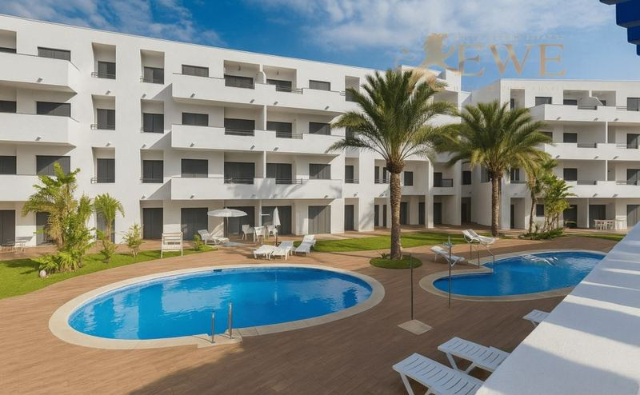
Vera
Fully equipped tourist apartments, 500 m from the beach in Vera
180.000 €
2 dormitorios · 1 baño · 70 m²Ref. EWE3696
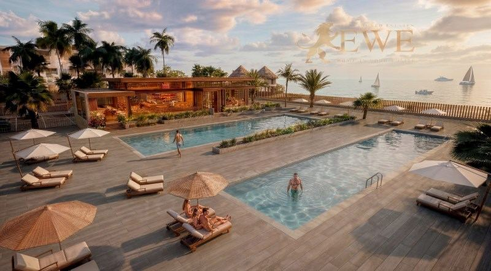
Entrega Nov 2028Vera
New apartments on the beachfront in Vera Playa
180.000 €
1 dormitorio · 1 baño · 41 m²Ref. EWE3856
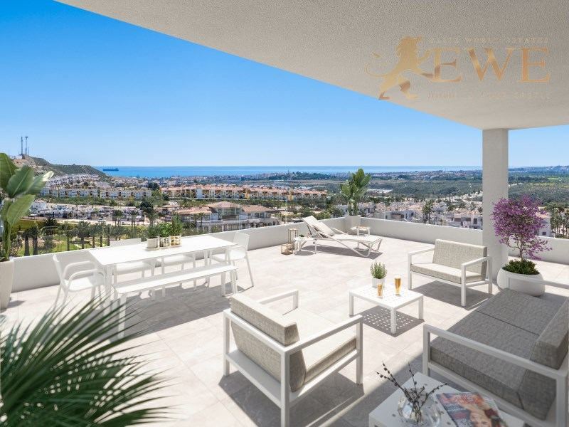
Entrega mediados 2027Vera
New apartment development located 2 km from the beach in Vera
255.000 €
3 dormitorios · 2 baños · 86 m²Ref. EWE3595
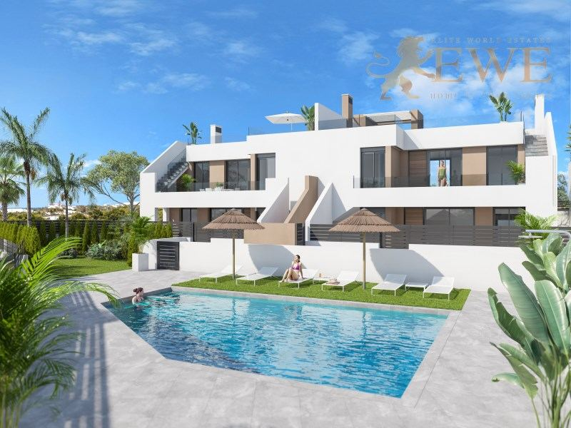
Entrega mediados 2027Vera
New bungalow 2 km from the beach in Vera
268.500 €
3 dormitorios · 2 baños · 86 m²Ref. EWE3596
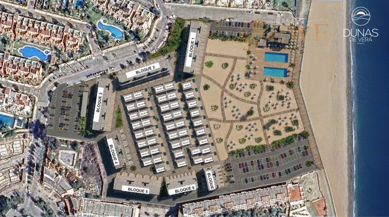
Entrega Nov 2028Vera
New tourist apartments on the beachfront in Vera Playa
280.000 €
2 dormitorios · 1 baño · 56 m²Ref. EWE3857
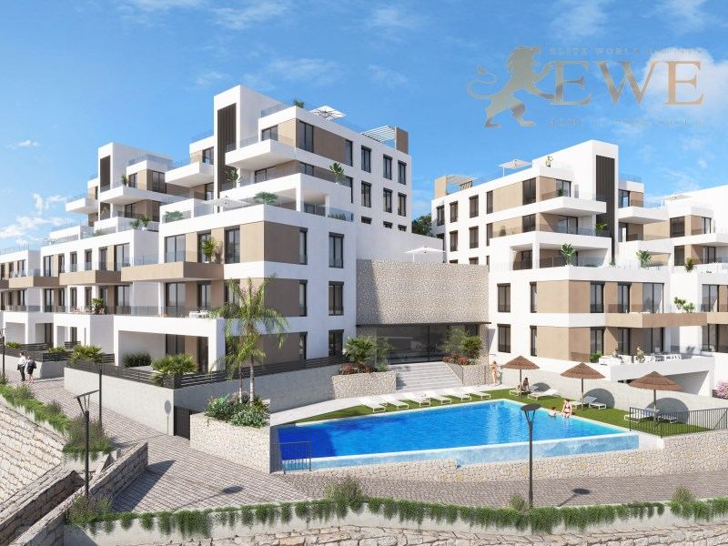
Entrega mediados 2027Vera
New apartment 2 km from the beach in the picturesque town of Vera
285.000 €
2 dormitorios · 2 baños · 64 m²Ref. EWE3594
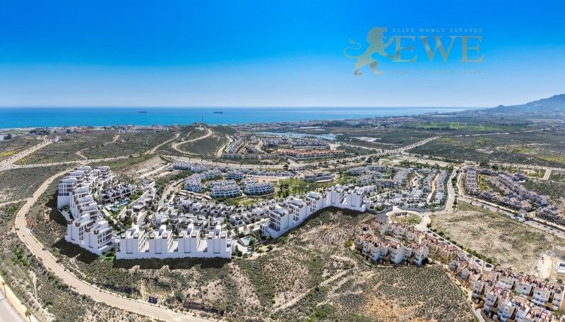
Entrega mediados 2027Vera
Fantastic bungalow near the beach in Vera
298.500 €
2 dormitorios · 2 baños · 74 m²Ref. EWE3597
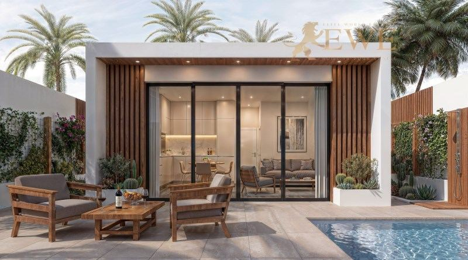
Entrega Nov 2028Vera
Excellent tourist villas on the beachfront in Vera Playa
370.000 €
2 dormitorios · 1 baño · 57 m²Ref. EWE3858
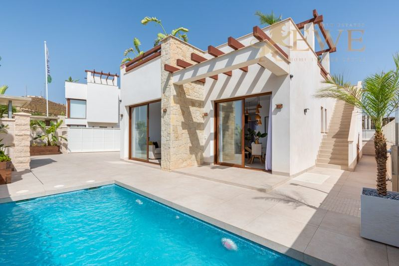
Vera
New villa with private pool 200 m from the beach in Vera
429.000 €
3 dormitorios · 2 baños · 90 m²Ref. EWE3898
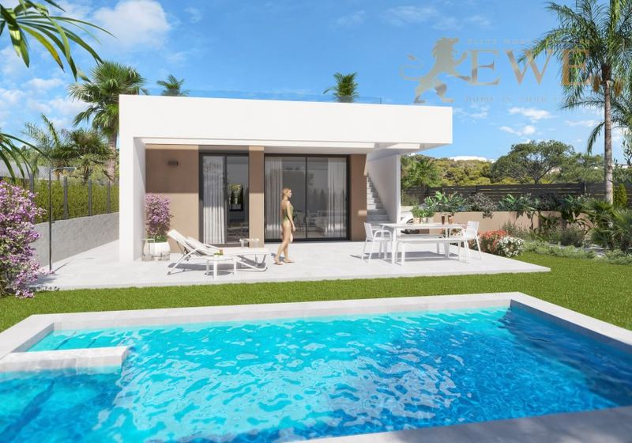
Vera
New villa with pool near the beach in Vera
445.000 €
3 dormitorios · 2 baños · 100 m²Ref. EWE3598
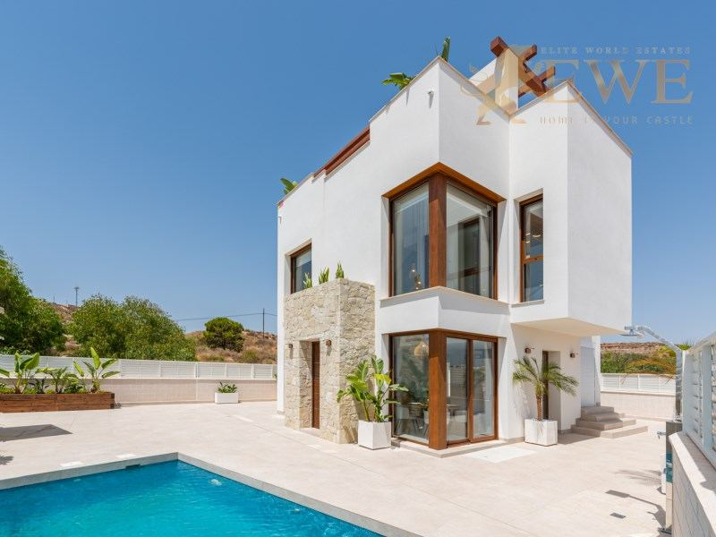
Vera
Excellent villa with private pool 250 m from the beach in Vera
475.000 €
3 dormitorios · 3 baños · 127 m²Ref. EWE3899
La ciudad
Vivir en Vera
Vera es una localidad de la provincia de Almería, en Andalucía, a pocos kilómetros del mar. Su costa, Vera Playa, tiene largas playas de arena, paseo marítimo y residenciales modernos, y es muy buscada por compradores de toda Europa.
La zona es seca y soleada la mayor parte del año, con un invierno suave. El casco antiguo de Vera tiene iglesia, plazas y comercios, y los cercanos Mojácar y Garrucha aportan casas blancas, un puerto pesquero y buenos restaurantes.
Los precios son más bajos que en las costas más conocidas, así que muchos compradores encuentran una vivienda nueva cerca de la playa con un presupuesto modesto. El aeropuerto de Almería está a una hora en coche, y el de la Región de Murcia a hora y media.
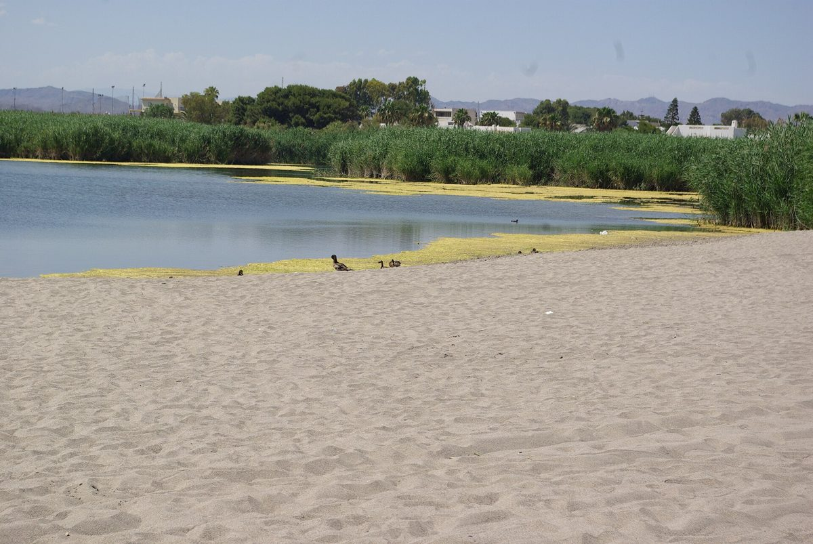
Dónde comprar
Las principales zonas de Vera
Vera Playa
La zona de playa de Vera, con playas de arena y paseo marítimo. Pisos nuevos y villas cerca del mar.
Vera pueblo
El casco antiguo, a pocos kilómetros del mar, con tiendas y servicios. Pisos nuevos y bungalows a unos 2 km de la playa.
Hacia Garrucha
La costa al norte de Vera Playa, cerca del puerto pesquero de Garrucha y sus restaurantes.
Hacia Mojácar
La costa al sur de Vera, cerca del pueblo blanco de Mojácar en su colina.
Presupuesto
Cuánto cuesta comprar en Vera
Al precio se suman impuestos y gastos. Para una vivienda nueva de 280.000 €, por ejemplo, son 28.000 € de IVA y 3.360 € de AJD, más notaría, registro y abogado. En la segunda mano los impuestos son otros, así que pídanos siempre la cifra exacta de la vivienda que le guste.
| Obra nueva | 10 % IVA + 1,2 % AJD |
|---|---|
| Segunda mano | 7 % ITP |
| Notaría, registro, abogado | aprox. 1,5–2,5 % del precio |
| Cada año | IBI y gastos de comunidad, según la vivienda |
Preguntas
Comprar vivienda en Vera: preguntas y respuestas
¿Cuánto cuesta un piso en Vera?
Nuestros pisos en Vera empiezan hoy en 180.000 €, y la mayoría cuestan entre 180.000 € y 300.000 €. Los bungalows cuestan desde unos 270.000 €, y las villas con piscina privada cerca de la playa de unos 430.000 € a 475.000 €.
¿Puedo alquilar un piso en Vera Playa?
Sí. Algunos de nuestros pisos en Vera Playa ya tienen licencia turística. El alquiler vacacional en Andalucía requiere la inscripción en el registro de turismo de la Junta, así que compruebe la licencia antes de comprar.
¿A qué distancia está Vera del aeropuerto?
El aeropuerto de Almería está a una hora en coche, y el de la Región de Murcia a hora y media.
¿Qué gastos hay además del precio?
En Andalucía se paga un 10 % de IVA y un 1,2 % de AJD en obra nueva, y un 7 % de ITP en segunda mano. Notaría, registro y abogado suman alrededor de un 1,5–2,5 %.
¿Pueden comprar vivienda los extranjeros en Vera?
Sí. Cualquier persona puede comprar una vivienda en España. Necesita un NIE y normalmente una cuenta bancaria española, y le ayudamos con las dos cosas. Consulte nuestra guía del NIE.


¿Busca casa en Vera?
Cuéntenos su presupuesto y lo que necesita. Respondemos en un día laborable, en español, inglés, alemán o polaco.